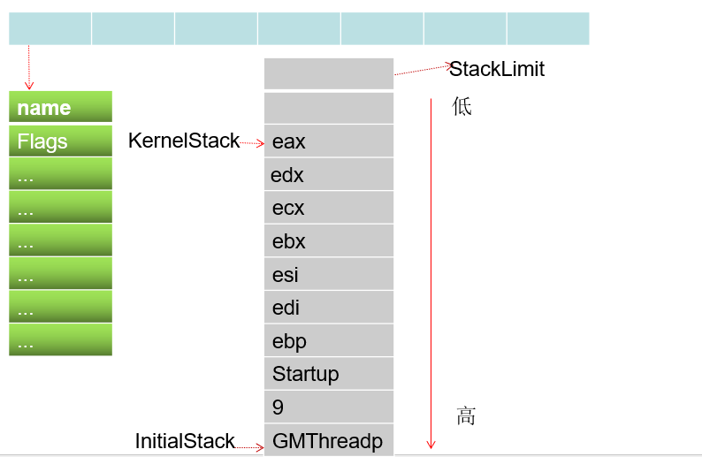
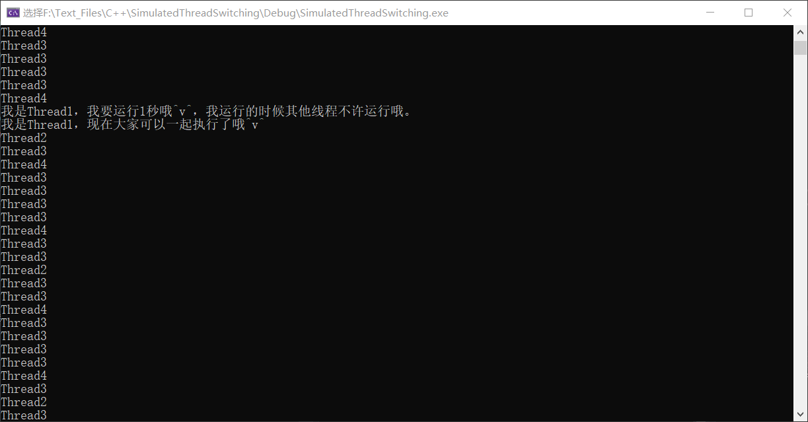

# 模拟线程切换
开始学习 Windows 的线程切换，线程切换比较复杂，为了更好的学习，我们要先读一份代码。
关键结构体：
调度链表
创建结构体，挂到链表里，正在运行的线程在 KPCR 中，等待线程 与 33 个调度线程的，线程的状态，
初始化线程的堆栈

# 分析代码
配合海哥的教程代码很好理解。
# Thread.h
#pragma once | |
#include <windows.h> | |
#include <stdio.h> | |
// 最大支持的线程数 | |
#define MAXGMTHREAD 100 | |
// 线程信息的结构 | |
typedef struct | |
{ | |
char* name; // 线程名 相当于线程 ID | |
int Flags; // 线程状态 | |
int SleepMillsecondDot; // 休眠时间 | |
void* initialStack; // 线程堆栈起始位置 | |
void* StackLimit; // 线程堆栈界限 | |
void* KernelStack; // 线程堆栈当前位置，也就是 ESP | |
void* lpParameter; // 线程函数的参数 | |
void(*func)(void* lpParameter); // 线程函数 | |
}GMThread_t; | |
void GMSleep(int MilliSeconds); | |
int RegisterGMThread(char* name, void(*func)(void* lpParameter), void* lpParameter); | |
void Scheduling(); |
模拟线程结构体，其中的 initialStack StackLimit KernelStack 是线程切换过程中关键的的参数。
# ThreadCore.cpp
#include "ThreadCore.h" | |
// 定义线程栈的大小 | |
#define GMTHREADSTACKSIZE 0x80000 | |
// 当前线程的索引 | |
int CurrentThreadIndex = 0; | |
// 这样初始化使每个结构体的第一个成员为 NULL，其余全为 0，调试可看。 | |
// 线程的列表 | |
GMThread_t GMThreadList[MAXGMTHREAD] = { NULL, 0 }; | |
// 线程状态的标志 | |
enum FLAGS | |
{ | |
GMTHREAD_CREATE = 0x1, | |
GMTHREAD_READY = 0x2, | |
GMTHREAD_SLEEP = 0x4, | |
GMTHREAD_EXIT = 0x8, | |
}; | |
// 启动线程的函数 | |
void GMThreadStartup(GMThread_t* GMThreadp) | |
{ | |
GMThreadp->func(GMThreadp->lpParameter); | |
GMThreadp->Flags = GMTHREAD_EXIT; | |
Scheduling(); | |
return; | |
} | |
// 空闲线程的函数 | |
void IdleGMThread(void* lpParameter) | |
{ | |
printf("IdleGMThread---------------\n"); | |
Scheduling(); | |
return; | |
} | |
// 向栈中压入一个 uint 值 | |
void PushStack(unsigned int** Stackpp, unsigned int v) | |
{ | |
*Stackpp -= 1;//ebp - 4 | |
**Stackpp = v;// | |
return; | |
} | |
// 初始化线程的信息 | |
void initGMThread(GMThread_t* GMThreadp, char* name, void(*func)(void* lpParameter), void* lpParameter) | |
{ | |
unsigned char* StackPages; | |
unsigned int* StackDWordParam; | |
// 结构初始化赋值 | |
GMThreadp->Flags = GMTHREAD_CREATE; | |
GMThreadp->name = name; | |
GMThreadp->func = func; | |
GMThreadp->lpParameter = lpParameter; | |
// 申请空间 | |
StackPages = (unsigned char*)VirtualAlloc(NULL, GMTHREADSTACKSIZE, MEM_COMMIT, PAGE_READWRITE); | |
// 初始化 | |
memset(StackPages, 0, GMTHREADSTACKSIZE); | |
// 初始化堆栈地址 | |
GMThreadp->initialStack = StackPages + GMTHREADSTACKSIZE; | |
// 堆栈限制 | |
GMThreadp->StackLimit = StackPages; | |
// 堆栈地址 | |
StackDWordParam = (unsigned int*)GMThreadp->initialStack; | |
// 入栈 | |
PushStack(&StackDWordParam, (unsigned int)GMThreadp); // 通过这个指针来找到线程函数，线程参数 | |
PushStack(&StackDWordParam, (unsigned int)0x12345678); // 平衡堆栈的 (不用管，此值无意义) | |
PushStack(&StackDWordParam, (unsigned int)GMThreadStartup); // 线程入口函数 这个函数负责调用线程函数 | |
PushStack(&StackDWordParam, (unsigned int)5); //push ebp 此值无意义，是寄存器初始值 | |
PushStack(&StackDWordParam, (unsigned int)7); //push edi 此值无意义 | |
PushStack(&StackDWordParam, (unsigned int)6); //push esi 此值无意义 | |
PushStack(&StackDWordParam, (unsigned int)3); //push ebx 此值无意义 | |
PushStack(&StackDWordParam, (unsigned int)2); //push ecx 此值无意义 | |
PushStack(&StackDWordParam, (unsigned int)1); //push edx 此值无意义 | |
PushStack(&StackDWordParam, (unsigned int)0); //push eax 此值无意义 | |
// 当前线程的栈顶 | |
GMThreadp->KernelStack = StackDWordParam; | |
// 当前线程状态 | |
GMThreadp->Flags = GMTHREAD_READY; | |
} | |
// 将一个函数注册为单独线程执行 | |
int RegisterGMThread(char* name, void(*func)(void* lpParameter), void* lpParameter) | |
{ | |
int i; | |
for (i = 1; GMThreadList[i].name; i++) | |
{ | |
if (0 == _stricmp(GMThreadList[i].name, name)) | |
{ | |
break; | |
} | |
} | |
initGMThread(&GMThreadList[i], name, func, lpParameter); | |
return (i & 0x55AA0000); | |
} | |
// 切换线程 1：当前线程结构体指针 2：要切换的线程结构体指针 | |
__declspec(naked) void SwitchContext(GMThread_t* SrcGMThreadp, GMThread_t* DstGMThreadp) | |
{ | |
__asm | |
{ | |
// 提升堆栈 | |
push ebp | |
mov ebp, esp | |
// 保存当前线程寄存器 | |
push edi | |
push esi | |
push ebx | |
push ecx | |
push edx | |
push eax | |
mov esi, SrcGMThreadp | |
mov edi, DstGMThreadp | |
mov[esi + GMThread_t.KernelStack], esp | |
// 经典线程切换，另外一个线程复活 | |
mov esp, [edi + GMThread_t.KernelStack] | |
pop eax | |
pop edx | |
pop ecx | |
pop ebx | |
pop esi | |
pop edi | |
pop ebp | |
ret // 把 startup (线程函数入口) 弹到 eip 执行的就是线程函数了 | |
} | |
} | |
// 这个函数会让出 cpu，从队列里重新选择一个线程执行 | |
void Scheduling() | |
{ | |
// 获取自系统启动以来经过的毫秒数 | |
int TickCount = GetTickCount(); | |
GMThread_t* SrcGMThreadp = &GMThreadList[CurrentThreadIndex]; | |
GMThread_t* DstGMThreadp = &GMThreadList[0]; | |
for (int i = 1; GMThreadList[i].name; i++) | |
{ | |
if (GMThreadList[i].Flags & GMTHREAD_SLEEP) | |
{ | |
if (TickCount > GMThreadList[i].SleepMillsecondDot) | |
{ | |
GMThreadList[i].Flags = GMTHREAD_READY; | |
} | |
} | |
if (GMThreadList[i].Flags & GMTHREAD_READY) | |
{ | |
DstGMThreadp = &GMThreadList[i]; | |
break; | |
} | |
} | |
// 获取队列中下一个线程的索引 | |
CurrentThreadIndex = DstGMThreadp - GMThreadList; | |
SwitchContext(SrcGMThreadp, DstGMThreadp); | |
return; | |
} | |
void GMSleep(int MilliSeconds) | |
{ | |
GMThread_t* GMThreadp; | |
GMThreadp = &GMThreadList[CurrentThreadIndex]; | |
if (GMThreadp->Flags != 0) | |
{ | |
GMThreadp->Flags = GMTHREAD_SLEEP; | |
GMThreadp->SleepMillsecondDot = GetTickCount() + MilliSeconds; | |
} | |
Scheduling(); | |
return; | |
} |
注意在 GMThreadStartup 函数中 GMThreadp->func(GMThreadp->lpParameter);
我们在前面的模拟初始化线程结构体中，设置的线程函数是不一样的。
但，它是如何找线程的参数的呢？
这个函数 void GMThreadStartup(GMThread_t* GMThreadp) 我们并没有传参呀？
这里看一下反汇编就明白了
虽然我们没有传参，但我们定义这个函数的时候是有参数的，所以程序编译的时候，它会直接找 ebp+8 的位置，那 ebp+8 它能正确找到参数吗？可以！！
继续观察这个图：
24: void GMThreadStartup(GMThread_t* GMThreadp) | |
25: { | |
0057C020 push ebp | |
0057C021 mov ebp,esp |
当执行 ret 指令后，esp-4 esp 指向了 9（这个值是随便压入栈的）并且 eip 指向了堆栈中存储 Startup 函数地址的位置，既程序开始执行 GMThreadStartup 函数，然后执行了 push ebp 和 mov ebp,esp 后，esp 和 ebp 都指向了堆栈中原来存储 Startup 函数地址的位置，并且这个值也被替换为了，原来的 esp 的值（这个 esp 的值也是我们随便压入栈的）。
这个时候已经清楚的知道了 ebp 和 esp 的值， 在堆栈中 ebp+8 的位置正是每个线程的模拟结构体！
非常的巧妙！我称之为艺术（嘿嘿没见过世面…）！！大拇指.png
# main.cpp
#include "ThreadCore.h" | |
extern int CurrentThreadIndex; | |
extern GMThread_t GMThreadList[MAXGMTHREAD]; | |
void Thread1(void* n) | |
{ | |
while (1) | |
{ | |
printf("Thread%d\n", n); | |
GMSleep(500); | |
} | |
} | |
void Thread2(void* n) | |
{ | |
while (1) | |
{ | |
printf("Thread%d\n", n); | |
GMSleep(200); | |
} | |
} | |
void Thread3(void* n) | |
{ | |
while (1) | |
{ | |
printf("Thread%d\n", n); | |
GMSleep(10); | |
} | |
} | |
void Thread4(void* n) | |
{ | |
while (1) | |
{ | |
printf("Thread%d\n", n); | |
GMSleep(1000);// 模拟调用 API 函数 | |
} | |
} | |
int main() | |
{ | |
RegisterGMThread((char*)"Thread1", Thread1, (void*)1); | |
RegisterGMThread((char*)"Thread2", Thread2, (void*)2); | |
RegisterGMThread((char*)"Thread3", Thread3, (void*)3); | |
RegisterGMThread((char*)"Thread4", Thread4, (void*)4); | |
for (;;) | |
{ | |
Sleep(20);// 模拟时钟中断 | |
Scheduling(); | |
} | |
return 0; | |
} |
这个就没什么好说的了。
# 课后作业
写两个函数实现线程的挂起和恢复功能。
就是模拟 SuspendThread() 和 ResumeThread() 函数
回顾一下以前的知识点：如何让线程停下来？
让自己停下来: Sleep()
让别人停下来: SuspendThread()
线程恢复: ResumeThread()
海哥说用最简约的方式写。
不就是改线程的状态吗！
# 代码
写的时候也有其他疑问，要不要模拟操作系统添加一个 context 呢？要不要定义一个等待链表呢？如何随时挂起一个线程？不过海哥在视频里说了，用最简约的方式写，也是哈，操作系统考虑的事情很多，我们不用考虑那么多，没必要啊！
线程 1 调用挂起函数，挂起哪个线程？ 线程都有名字。
调用恢复函数，恢复哪个函数？这个也可以使用名字。
// 挂起函数 | |
void GMSuspend(LPCSTR ThreadName) | |
{ | |
size_t i; | |
// 由线程名字查找线程 | |
for (i = 1; GMThreadList[i].name; i++) | |
{ | |
if (0 == strcmp(GMThreadList[i].name, ThreadName)) | |
{ | |
// 修改线程状态 | |
GMThreadList[i].Flags = GMTHREAD_SUSPEND; | |
return; | |
} | |
} | |
} | |
// 恢复线程 | |
void GMResume(LPCSTR ThreadName) | |
{ | |
size_t i; | |
// 由线程名字查找线程 | |
for (i = 1; GMThreadList[i].name; i++) | |
{ | |
if (0 == strcmp(GMThreadList[i].name, ThreadName)) | |
{ | |
// 修改线程状态 | |
GMThreadList[i].Flags = GMTHREAD_READY; | |
return; | |
} | |
} | |
} |
修改了一下 线程 1 的函数：
void Thread1(void* n) | |
{ | |
bool Flags = true; | |
while (1) | |
{ | |
switch (Flags) | |
{ | |
case true: | |
{ | |
printf("我是Thread%d，我要运行1秒哦^v^，我运行的时候其他线程不许运行哦。\n", n); | |
GMSuspend("Thread2"); | |
GMSuspend("Thread3"); | |
GMSuspend("Thread4"); | |
Flags = false; | |
break; | |
} | |
default: | |
{ | |
printf("我是Thread%d，现在大家可以一起执行了哦^v^\n", n); | |
GMResume("Thread2"); | |
GMResume("Thread3"); | |
GMResume("Thread4"); | |
Flags = true; | |
break; | |
} | |
} | |
GMSleep(1000); | |
} | |
} |
截图：

# 模拟线程切换总结
线程不是被动切换的，而是主动让出 CPU.
线程切换并没有使用 TSS 来保存寄存器，而是使用堆栈.
线程切换的过程就是堆栈切换的过程.